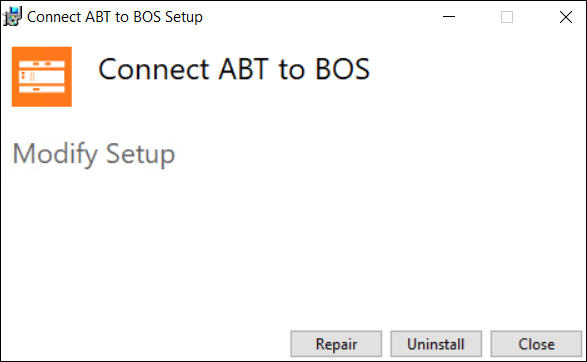
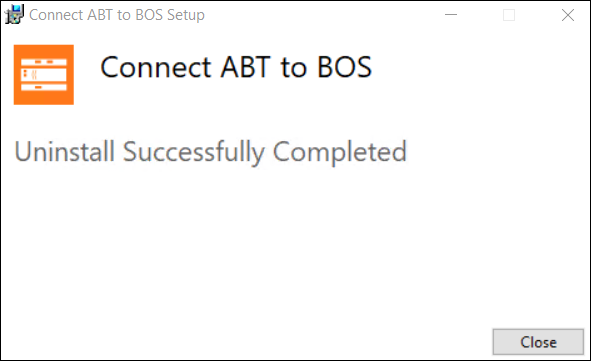

Uninstall Connect ABT to BOS
- For a new installation, copy the ABTBos.exe file from the common server location to your machine.
- Double-click the ABTBos.exe file to start the installer.
- The Connect ABT to BOS window displays.

- Click Uninstall.
- The progress bar displays.
- The Uninstallation Successfully Completed message displays.

- Click Close.